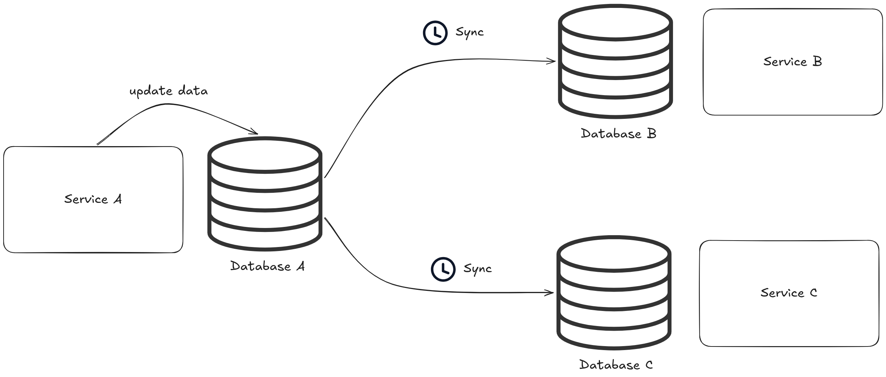
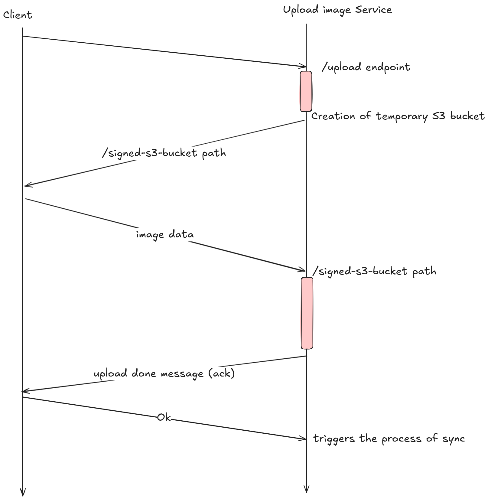
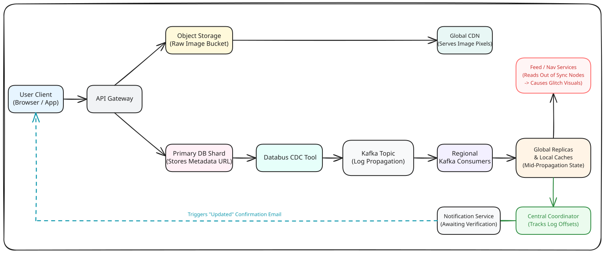

The other day I was updating my profile picture on LinkedIn when I noticed a strange visual glitch. Some pictures on the page took a few seconds before they synchronized with the others. A few avatars were already showing the new photo. Others still showed the old one. The page looked like it was disagreeing with itself.
If you talk to senior engineers, they will call this eventual consistency: a deliberate architectural trade-off in large-scale distributed systems. This article breaks down exactly what I observed, what was happening under the hood, and how LinkedIn engineered this behavior on purpose.

Large-scale systems cannot throw all of their data into a single massive database. Instead, they shard it, replicate it, and distribute it across the globe for lower latency and better availability. To serve content instantly, they cache uploaded photos in CDNs close to the user's geographic location. But this article is not about CDN caching. It is about how data consistency is managed across sharded, replicated databases sitting in completely different geographical locations.
The Breakdown: What I Saw vs. What Actually Happened
Here is the exact sequence of events from my side, contrasted with the infrastructure running invisibly in the background.
1. The Upload
What I saw: I upload an image. The system processes it for a moment, updates the avatar right in front of me, and says: "Your profile picture has been updated."
Under the hood: The upload mechanism is worth a separate post on its own. In short, it asynchronously streams the binary data directly to an isolated storage bucket, freeing up the main application API. The moment it says "Success", it means the new image metadata (the path to the photo) has been written to the primary database shard closest to my geographic location. That single write is what triggers everything that follows.

2. The Multi-Avatar Illusion
What I saw: I go back to my home feed. My avatar appears in three places: the sidebar, the top navigation bar, and on a post. Only one of them has changed.
Under the hood: The home feed is powered by multiple independent microservices. Each microservice reads from its own local cache or database replica. If the feed service has already picked up the update but the navigation bar service is still catching up, you see a hybrid state simultaneously on the same page. This is the classic visual artifact of an eventually consistent system: not broken, just mid-propagation.

3. The Clueless Friend
What I saw: I immediately check my profile on a friend's phone on the other side of the world. It still shows my old picture.
Under the hood: Their phone is hitting a regional data center in a completely different geography. The update event is still traveling through the global replication pipeline and has not reached that region yet.
4. The Confirmation Email
What I saw: A few minutes later, an email arrives: "Your profile picture has been updated." Everything is now consistent on both devices.
Under the hood: The notification service knew the right moment to send that email because it tracks what are called transaction log offsets. As downstream databases successfully apply the update, they broadcast small acknowledgments back to a central coordinator. Once the core infrastructure confirms sufficient replication consensus, it publishes a message to the notification service queue, which triggers the email. The email is not just a courtesy: it is the system's way of telling you that global consistency has been reached.
Enter Change Data Capture
So how does LinkedIn orchestrate this global propagation? They use a pattern called Change Data Capture (CDC) backed by event streaming.
The naive approach would be to write application code that manually updates the primary database and simultaneously sends a message to Kafka. The problem is that these are two separate operations: if the application crashes between them, you get a desync. One succeeded, the other did not, and your data is now inconsistent with no easy way to recover.
CDC solves this by letting the database itself act as the event source. The moment the primary database registers the new profile picture write, an automated CDC tool tails the database's internal transaction log. It captures the raw change and publishes it as an event into a Kafka topic. From there, Kafka streams the update across the globe to all downstream replicas, caches, and search indexes.
LinkedIn actually built and open-sourced their own CDC system for this purpose, called Databus. The key insight behind Databus is that the transaction log is the ground truth. If you can reliably tail it, you never miss an update.

Why LinkedIn Designed it This Way
Engineering is about trade-offs. When designing at this scale, LinkedIn had to look at their usage patterns and make distinct architectural choices.
Because of their massive global user base, their data must be horizontally sharded and replicated across multiple data centers. There is simply no alternative at that scale: a single database cannot absorb the write volume or deliver acceptable latency to every region on the planet.
From there, the question becomes speed vs. accuracy. Do we need strong, immediate consistency for a profile picture? Absolutely not. A delay of a few seconds or minutes won't break the core utility of the app, and it definitely isn't worth slowing down the platform's overall performance. LinkedIn deliberately chose high availability over instant consistency.
The last piece is user experience. Rejecting a profile update because a database node in Europe is temporarily lagging would be a terrible experience. Instead, they accept the operation immediately, handle the distribution asynchronously via CDC, and gracefully notify the user by email once the global ecosystem is completely settled.
The glitch I noticed was not a bug. It was the system working exactly as designed, making the right trade-off for its scale.